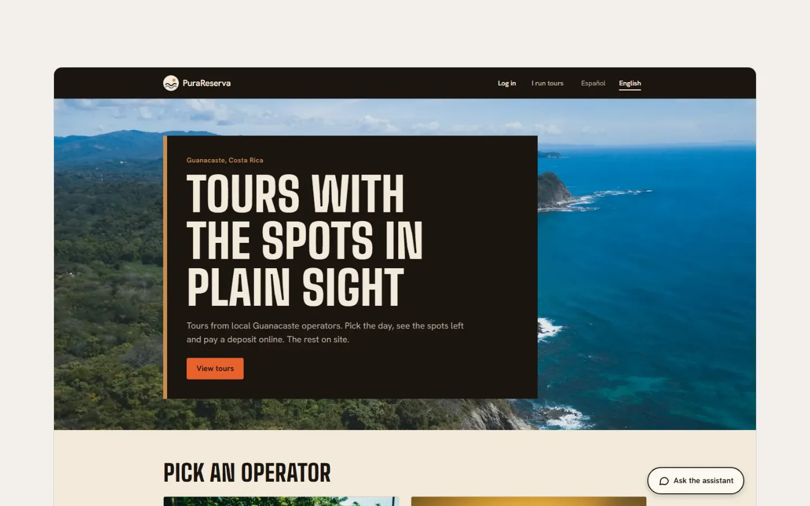
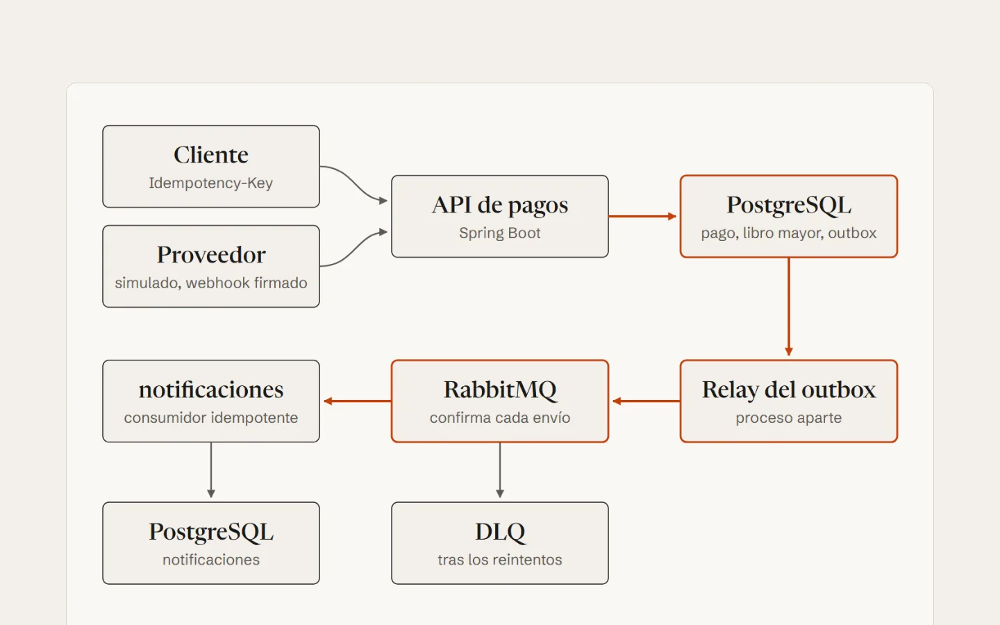
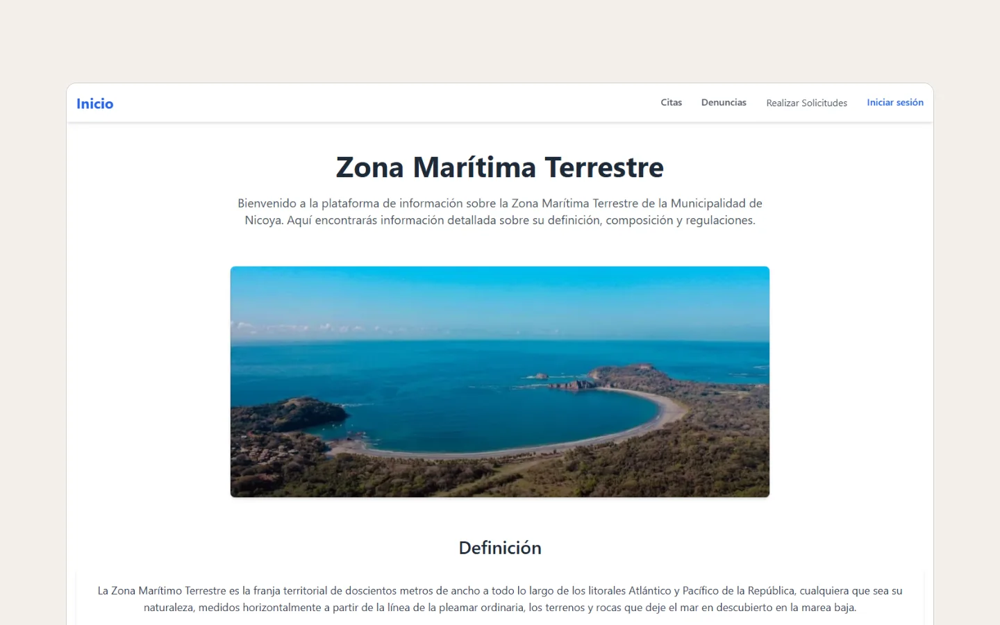
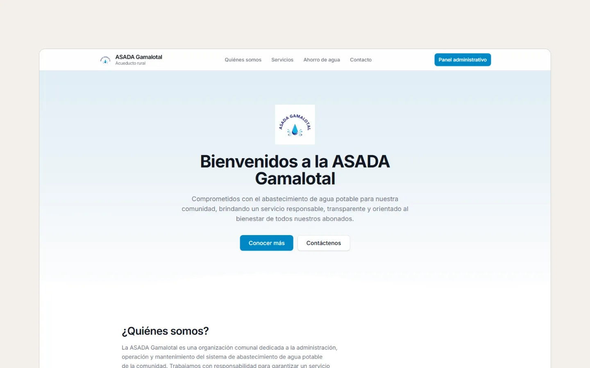

Frander Centeno
Desarrollador full stack
Construyo aplicaciones web y dashboards de datos para pymes e instituciones públicas.
- Ahora
- Graduado en Ingeniería en Sistemas (UNA, 2025). Últimamente: microservicios con Spring Boot y QA automatizado con Cypress. Costa Rica, UTC-6.
- Busco
- Puestos full stack, back-end o QA, y proyectos freelance.
- Antes
- Práctica en la ASADA Gamalotal (2025) y un proyecto universitario para la Municipalidad de Nicoya (2024–2025).
Trabajo destacado
-

PuraReserva
Reservas de tours en Guanacaste, con un asistente de IA.
WebDesarrollador full stackNext.js, SupabasePersonal
-

Servicio de pagos con microservicios
Pagos idempotentes y libro mayor de doble entrada, en dos servicios.
Back-endDesarrollador back-endJava 21, Spring BootPersonal
-

Sistema de la Zona Marítimo Terrestre, Nicoya
Portal ciudadano y panel administrativo para un departamento municipal.
WebDesarrollador full stackNext.js, MariaDBUniversidad
-

Pipeline de indicadores del BCCR
Indicadores diarios del Banco Central, con API pública y dashboard.
DatosFull stack e ingeniero de datosPython, NestJSPersonal
-

Sistema de inventario de la ASADA
Sistema de inventario para un acueducto rural.
WebDesarrollador full stackNext.js, SupabasePráctica
Más proyectos
-
Dashboard de llegadas de turistas
Llegadas internacionales con datos públicos del ICT. El demo puede tardar ~30 s en despertar.
-
Suite de QA para este portafolio
Pruebas E2E y de API que corren contra este sitio en producción.
Stack
Frontend
React, Next.js, TypeScript, Tailwind
Backend
NestJS, Supabase, PostgreSQL, REST
Datos
Python, pandas, DuckDB, Streamlit, Plotly
Calidad
Playwright, Vitest, GitHub Actions
Experiencia y educación
Jul 2025 – Dic 2025
ASADA Gamalotal
Práctica profesional.
2024 – 2025
Municipalidad de Nicoya
Proyecto universitario para el departamento de Zona Marítimo Terrestre.
2025
Ingeniería en Sistemas, Universidad Nacional
Certificaciones
DataCamp: AI Engineer for Developers, Data Engineer, Data Analyst, Python Developer, SQL Associate. Scrum Fundamentals Certified. PM4R Professional del BID.
Idiomas
Español, nativo. Inglés, B1.
Sobre mí
Planifico antes de escribir código y pruebo en un celular real antes de dar una función por terminada. Busco un puesto full stack donde pueda seguir construyendo y aprendiendo.
Contacto
- Correocentenofrander@gmail.com
- LinkedInfrander-centeno
- GitHubFrandercc1234